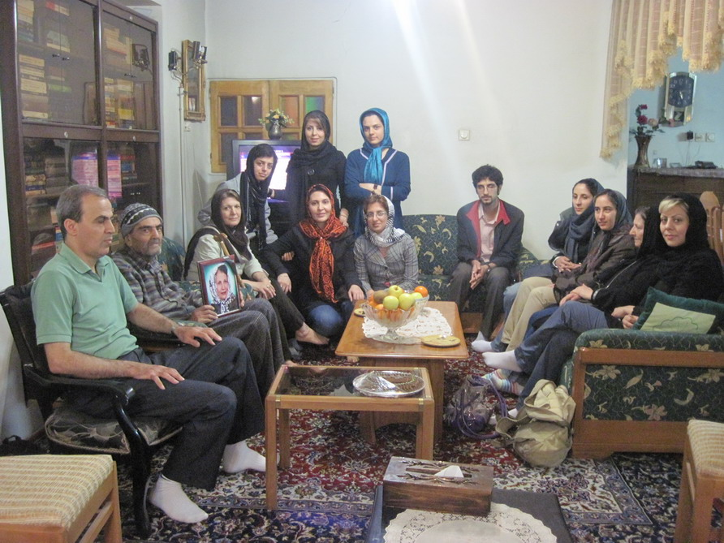
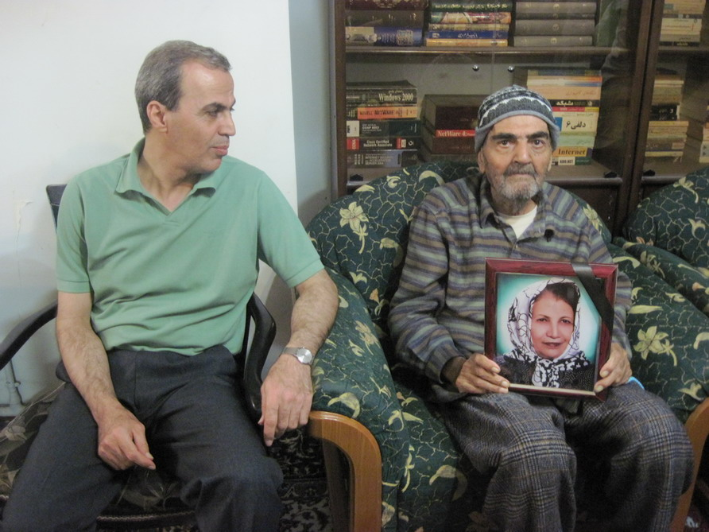

|
|

دیدار با خانواده محبوبه کرمی
يكشنبه22 فروردین 1389
تغییر برای برابری: روز جمعه 20 فروردين، جمعي از مادران و فعالان كمپين یک میلیون امضا در سالگرد فوت مادر محبوبه كرمي به ديدار خانواده او رفتند.
محبوبه كرمي از روز 11 اسفند سال 88 بازداشت شده، و تاكنون فقط يك بار در روز اول فروردين موفق به ملاقات با برادر خود شده و در تمام اين مدت در انفرادي به سر ميبرده است.
سال گذشته نيز محبوبه كرمي در طي بازديد عيد بازداشت شده بود و بلافاصله روز بعد از آزادي مادرش را از دست داد.
محبوبه براي دومين بار شب پنجشنبه 19 فروردين با منزل تماس گرفته و براي عدم حضورش در سالگرد فوت مادرش ابزار ناراحتي و تاسف كرده است. و نيز گفته كه اتهام "شركت در تجمعات غير قانوني" و نيز "عضويت در مجموعه فعالان حقوق بشر" به تازگي به او تفهيم شده است اما هنوز بازجويي ها به طور كل كامل به اتمام نرسيده است.
اين در حالي است كه پدر محبوبه از بيماري الزايمر رنج مي برد و تمام اين مدت يك سال توسط محبوبه مراقبت و پرستاري شده است.

